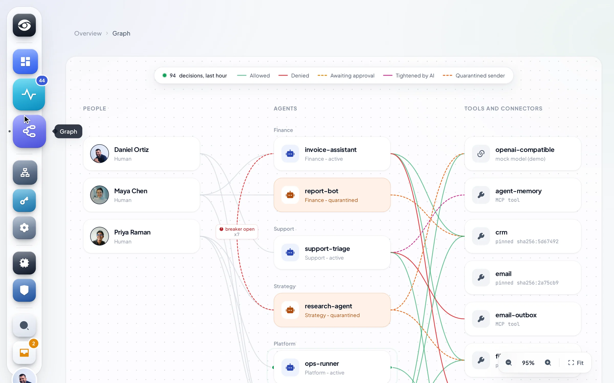
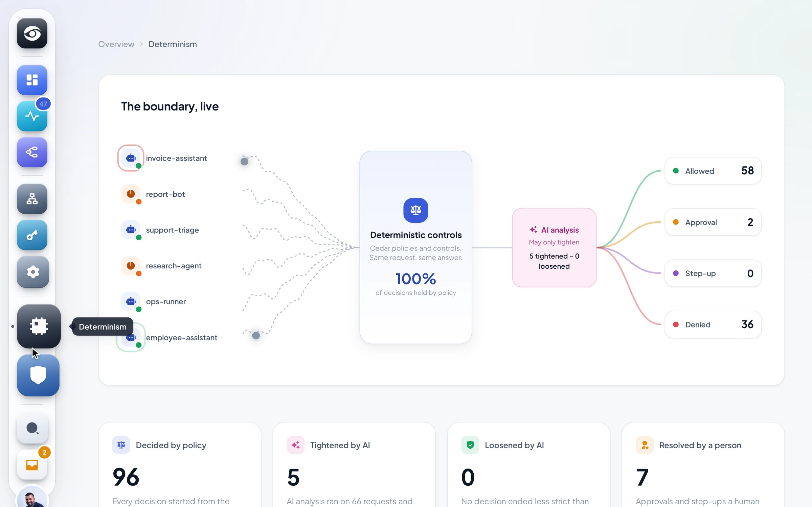
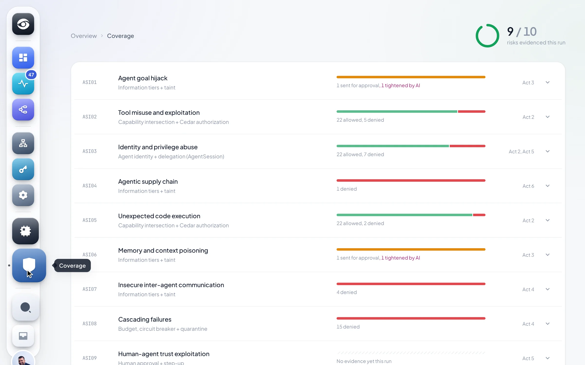

02.1
Betsee Desk
Claude Code and Codex for every employee. Governed.
Real Claude Code and Codex. Every tool call is decided by the Gateway before it runs.
- Reads by information tier
- Writes after a human says yes
- No network egress, fails closed
Every agent action passes one deterministic boundary, is decided by explicit policy, and leaves a trace that says why.
Decision feeddemo data
files.readAllowedemail.sendDeniedshell.execStep-upmemory.writeTightened by AIWriteAwaiting approvalcrm.readQuarantinedIdentityCapabilityCedarTierBudgetApprovalStep-upAudit
CTL-IN-001 Input content filterCTL-TIER-001 Resource tier ceilingCTL-CAP-001 Effective capability intersectionCTL-AI-001 AI analysis only tightensCTL-APR-003 Payment thresholdCTL-TOOL-001 Pinned MCP tool descriptorsCTL-POL-001 Fail closed
Why Betsee
The model can suggest. Betsee decides what may execute.
Non-deterministic AI. Deterministic control.
Pipeline stages, in a fixed order, on every action
Decisions an AI model can loosen
OWASP agentic risks mapped to a primitive
Security cases against the live stack, under a minute
(01) How it works
invoice-assistant asks to send 48,000.00 EUR to nordfreight-supplier, for Maya
Chen.
(02) Product
Recorded from the real interfaces. Acme Logistics demo, simulated traffic.
02.1
Betsee Desk
Real Claude Code and Codex. Every tool call is decided by the Gateway before it runs.
02.2
Content and runtime controls
Cards, IBANs, PESEL and keys never reach the model. Confidential files stay above the ceiling.
CTL-IN-001 Input content filterCTL-TIER-001 Resource tier ceilingCTL-FILE-001 File intake and release02.3
Approvals
High-impact actions wait for a human who sees exactly what the Gateway stored.
02.4
Policies and controls
Each use case says what it permits and what needs a human. Each control names its Cedar policies.
02.5
Identity
Each agent has its own identity, under the person who runs it.
Inside the Director



(03) Principles
Agent tokens work only on agent routes, human tokens only on human routes.
A human reaches nothing through an agent that policy denies them.
The same request under the same conditions always gets the same answer.
It can raise allow to approval or deny. No permit policy reads its output.
Change one parameter and the approval no longer applies.
W3C trace context, one span per stage, append-only audit rows.
(04) OWASP Top 10 for Agentic Applications, 2026
ASI01Agent goal hijackInformation tiers and taint, no write-downASI02Tool misuse and exploitationCapability intersection and Cedar authorizationASI03Identity and privilege abuseAgent identity and delegationASI04Agentic supply chainTool integrity, pinned MCP descriptorsASI05Unexpected code executionCommand validationASI06Memory and context poisoningInformation tiers and taint; AI analysis tightensASI07Insecure inter-agent communicationMediated agent-to-agent channelASI08Cascading failuresBudget, circuit breaker and quarantineASI09Human-agent trust exploitationHuman approval and step-upASI10Rogue agentsBudget, circuit breaker and quarantine(05) Run it
Docker Compose 2.20 or newer, port 80 free. The demo organisation comes seeded.
docker compose up
[+] Running 10/10
Container betsee-postgres-1 Healthy
Container betsee-keycloak-1 Healthy
Container betsee-gateway-1 Healthy
Container betsee-caddy-1 Started